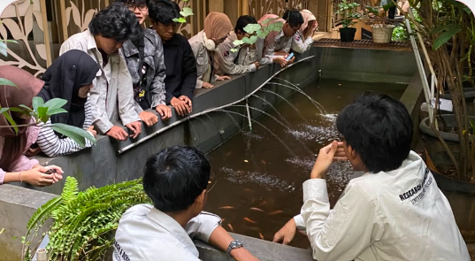

Unit Kegiatan Mahasiswa Research and Development Keluarga Mahasiswa
Universitas Pancasila atau disingkat UKM R&D KMUP adalah UKM yang bergerak
di bidang penelitian. UKM R&D ini berdiri atas dasar sekelompok mahasiswa
yang ingin mengembangkan keilmuannya yang terdiri dari keberagaman
disiplin ilmu dengan mengikuti segala event nasional dan internasional.
UKM R&D ini memiliki visi sebagai wadah riset keilmuan yang tanggap
kemajuan teknologi dan peka terhadap problematika sosial masyarakat
sehingga mampu memberikan solusi nyata dengan mengaitkan pada
aplikasi-aplikasi teknologi yang efektif dan efisien. Untuk mencapai
tujuan tersebut.
UKM R&D memiliki misi menjadi tempat pengembangan intelektualitas mahasiswa dalam penelitian pembuatanpenerapan teknologi yang berpedoman Tri Dharma Perguruan Tinggi
Selain itu, UKM R&D
juga memiliki misi sebagai media penerapan bidang-bidang keilmuan dengan
menyelaraskan pada teori yang diperoleh saat kuliah, dan masih banyak
lagi.
AYO JOIN SEKARANG
Hubungi kontak dibawah ini